Iluminación
5.1Diseño
OpenQ controla la iluminación por DMX. El diseño de iluminación (patch, grupos, presets, efectos y secuencias de cues de iluminación) se guarda aparte de la lista de cues, en el espacio de Iluminación: cambia entre y Cues encima de la lista de cues. El diseño solo se puede cambiar en modo edición. En modo función, el espacio de Iluminación muestra la página Reproducción y el monitor DMX.
Cues de luz
Una cue de Luz de la lista de cues reproduce el diseño
de iluminación; no guarda niveles propios. En su pestaña Ajustes elige la Acción: GO de cue de iluminación
lanza una cue de iluminación de una secuencia (se muestra como secuencia/cue) con sus propios fundidos, y
Liberación apaga una secuencia, o todas, en el tiempo indicado. Las cues de luz se lanzan junto con el sonido y el
vídeo, así que un cambio de luz puede ir en el mismo GO que un efecto o un vídeo.
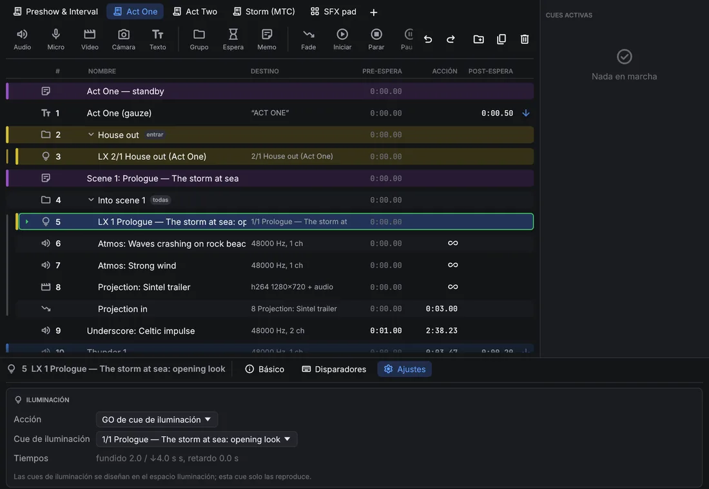
Una cue de parar dirigida a una cue de luz libera la secuencia de esa cue. Con Las cues Parar sin destino también apagan la iluminación (página Secuencias), las cues de parar sin destino liberan también todas las secuencias, con el Fundido al liberar. Parar todo y la parada inmediata (Esc) paran solo el sonido y las imágenes: la iluminación sigue como está, así que parar la lista de cues nunca deja el escenario a oscuras.
La iluminación solo funde mediante cues de luz: una cue de iluminación funde con sus propios tiempos, y la siguiente cue de iluminación o una liberación siguen desde ahí. Las cues Fade no actúan sobre cues de luz.
Patch
La página Patch tiene tres vistas: Tabla, Planta y Tipos de aparato. La tabla lista los aparatos. Para añadir (en la Tabla o la Planta), elige un tipo de aparato y un modo en Añadir aparatos, indica cuántos, el primer número de aparato, el universo y la dirección inicial (auto toma la siguiente libre), y pulsa Sumar. Todas las celdas de la tabla se pueden editar: nombre, tipo, modo, universo, dirección, posición y rotación, y la inversión de panorama o tilt. Las direcciones que se solapan y los números repetidos se avisan encima de la tabla. Un aparato con varias entradas DMX (un break por entrada, definido en su tipo de aparato) tiene una dirección por break: pulsa su número de canales para poner el universo y la dirección de los demás breaks.
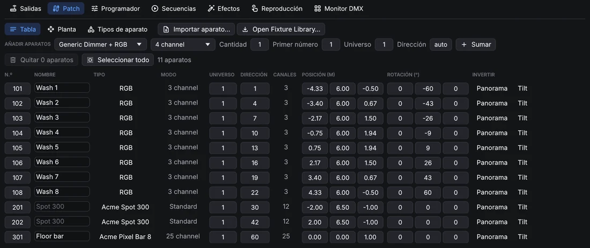
Los aparatos de varias celdas, como las barras LED, se controlan también celda a celda: la celda 3 del aparato 101 es
101.3. Planta muestra el montaje desde arriba. Haz clic para seleccionar (Ctrl añade),
arrastra para mover la selección, arrastra en un hueco para desplazar la vista y usa la rueda para acercar. Los puntos de enfoque se ven como cruces verdes; arrastra uno para moverlo. Con aparatos
seleccionados, Colocar los reparte en línea, en arco o en cuadrícula.
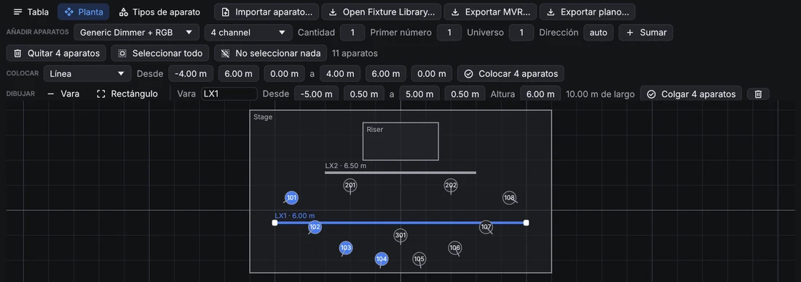
Para que la planta se parezca al teatro real, dibuja en ella: elige Vara o Rectángulo junto a Dibujar y arrastra en la planta. Las varas son tubos, truss o calles, con su altura; los rectángulos son el escenario, tarimas o escenografía. Haz clic en una vara, o en el borde de un rectángulo, para seleccionarlo: arrástralo para moverlo, arrastra sus tiradores blancos para cambiar sus extremos o esquinas, y ajusta su nombre, coordenadas exactas y altura en la fila de arriba. Supr sobre la planta lo borra. Con aparatos y una vara seleccionados, Colgar reparte los aparatos a lo largo de la vara, a su altura. Arrastra la etiqueta de una vara o un rectángulo para apartarla; el plano la pone ahí también, y en la fila de arriba la devuelve a su sitio.
Tipos de aparato
OpenQ trae tipos genéricos (dimmer, RGB, RGBW, CMY, cabezas móviles, estrobo, humo). Importar aparato… (en la
Tabla y la Planta) lee archivos de Open Fixture Library (.json), GDTF (.gdtf), QLC+ (.qxf) y OpenQ
(.oqfixture). Los tipos importados se copian en el espectáculo y se guardan en tu biblioteca de aparatos, así
que estarán en el siguiente espectáculo. Tipos de aparato abre el editor: canales y sus atributos, canales finos de
16 bits, valores por defecto, el valor que usa Resaltar y los rangos: las partes con nombre de un canal, como
las posiciones de una rueda de color o de gobos. Un rango puede tener un color y una imagen (Imagen (gobo)),
que se ven en el desplegable de ese canal en el programador; los archivos GDTF traen las imágenes de los gobos y los colores
de los LED del aparato, que usa el selector de color. Para las cabezas móviles, el editor fija los ángulos de pan, tilt y zoom en el valor DMX más bajo y en el más alto (un
archivo que gira al revés los trae invertidos); los archivos GDTF traen además dónde están la horquilla, la cabeza y la
lente, así que OpenQ apunta desde la lente como lo dibujan los visualizadores.
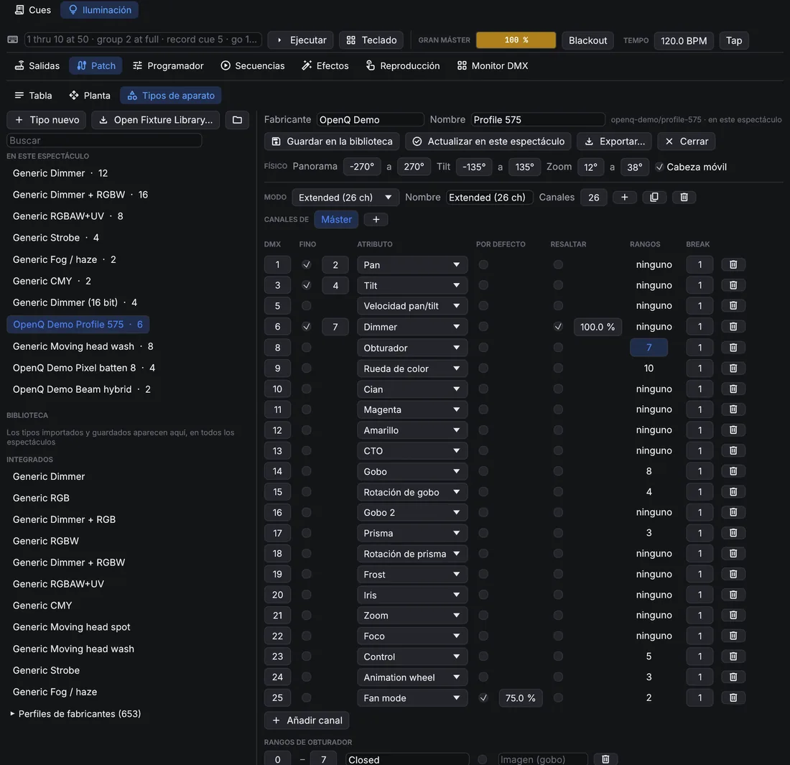
Los archivos MVR llevan una implantación de un programa a otro. Importar MVR… (en la Tabla y la Planta) añade los aparatos de un archivo de un visualizador, un programa de CAD u otra mesa, con sus posiciones, direcciones y estructuras (como varas y formas en la planta). Los tipos de aparato se buscan por nombre en el espectáculo y en tu biblioteca de aparatos; los demás salen de los archivos GDTF que lleva el MVR. En la vista Planta, Exportar MVR… guarda el patch con las posiciones y el archivo GDTF de cada tipo, para que visualizadores y otras mesas puedan importarlo.
Plano
Plano…, en la vista Planta, abre el editor del plano: la página impresa tal como saldrá, con las varas y rectángulos, los símbolos de los aparatos, números, direcciones, un título y una leyenda. Las etiquetas nunca se tapan: donde los aparatos están juntos, sus etiquetas se separan.
- Arrastra cualquier elemento para moverlo. Un clic selecciona (Mayús añade, arrastrar sobre el papel vacío selecciona una zona); la columna lateral cambia el texto, el tamaño y el color de los elementos seleccionados, los oculta o los devuelve a su sitio.
- Con varios elementos seleccionados, los botones de alineación igualan sus bordes o centros, o reparten tres o más por igual.
- Cada tipo de aparato recibe un símbolo deducido de su nombre (PAR, recorte, fresnel, cabeza móvil, panorama, estrobo, efecto…); elige otro para todo el tipo en la leyenda, o para un solo aparato.
- Añadir texto pone una nota libre en la página.
- Exportar… lo guarda como PDF (una hoja A3, a la mayor escala normalizada que quepa, como 1:50) o como dibujo SVG; el tipo se elige en el diálogo de guardar.
Los cambios se guardan con el espectáculo, así que la siguiente exportación los conserva.
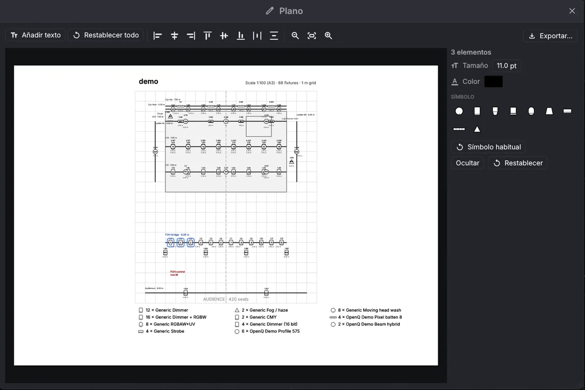
5.2Programación
Programador
Selecciona aparatos en sus fichas: un clic añade un aparato a la selección (un segundo clic lo quita), arrastrar por encima de varias fichas las añade todas, y un clic derecho selecciona solo ese aparato. Los grupos y la línea de órdenes también seleccionan. El panel de la derecha ajusta sus valores, con una página por familia: Intensidad, Color, Posición (arrastra en el recuadro para apuntar), Haz y Control. Arrastra una barra para fijar un valor, o usa la rueda encima para pasos del 1 %. Los canales con rangos tienen un botón por rango, por ejemplo uno por gobo. Los atributos que cambian de forma continua (intensidad, mezcla de color, pan y tilt, zoom, foco, iris, frost, humo…) siempre tienen una barra; si el archivo del aparato nombra rangos de ellos, los rangos son un selector debajo.
El selector de color muestra todos los colores visibles e ilumina los que puede dar el aparato seleccionado: la forma entre los colores de sus LED. Los de fuera se ven apagados, y un clic ahí toma el color más cercano que puede dar. Cada aparato mezcla el color con sus propios LED. Los colores de los LED vienen del tipo de aparato (los archivos GDTF los traen); sin ellos OpenQ usa colores de LED típicos, y lo indica bajo el selector.
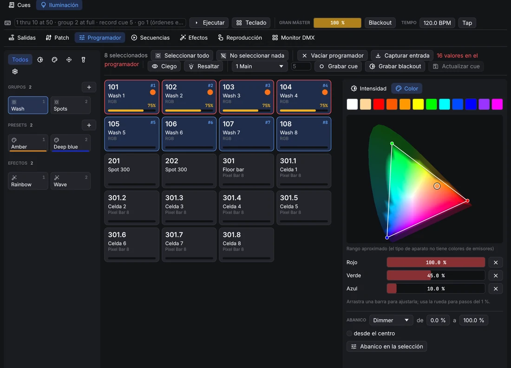
Los valores del programador mandan sobre la reproducción mientras están puestos, y son lo que guarda Grabar cue. Vaciar programador devuelve el control a la reproducción.
- La columna de la izquierda tiene los grupos, presets y efectos como tarjetas. Los botones de arriba muestran solo los presets y efectos de una familia (intensidad, color, posición, haz, control).
- Grupos: guarda la selección como grupo; haz clic en un grupo para seleccionarlo (Ctrl añade); con clic derecho se sobrescribe o se borra.
- Presets: guarda los valores de los aparatos seleccionados como preset: todos los atributos, o solo la familia que muestra el filtro. Al hacer clic en un preset se aplica. Las cues guardan un enlace al preset, así que al cambiarlo cambian todas las cues que lo usan.
- Abanico reparte un valor por la selección, por ejemplo de 0 a 100 %, también desde el centro hacia fuera.
- Ciego permite programar sin cambiar la salida. Resaltar pone los aparatos seleccionados en blanco abierto y a tope (no se graba); la flecha los recorre uno a uno.
- Capturar entrada lleva al programador lo que reciben las entradas DMX, para grabar aquí un estado hecho en otra mesa.
Puntos de enfoque
Un punto de enfoque es un lugar del escenario con nombre, como el centro, las esquinas del proscenio o una tarima. Las cues apuntan las cabezas móviles a un punto, no a valores de pan y tilt: OpenQ calcula el pan y el tilt a partir de la posición, la rotación y los ángulos de cada aparato. Mueve el punto (arrástralo en Patch → Planta) o un aparato, y todas las cues que apuntan a él lo siguen.
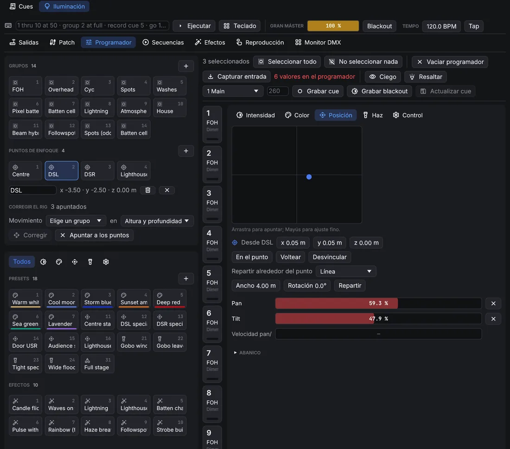
- Crear uno: apunta aparatos a un lugar a mano y después en Puntos de enfoque pone ahí un punto (en el suelo para un aparato, donde se cruzan los haces para varios).
- Apuntar a uno: haz clic en la tarjeta del punto (o
point 2en la línea de órdenes). Los aparatos seleccionados giran hacia él, y la fila bajo las tarjetas cambia su nombre o lo borra. - Apuntar al lado: mueve a mano un aparato que apunta a un punto y conserva el punto: la página Posición muestra el desplazamiento desde el punto (x a lo ancho, y profundidad, z altura), y la cue sigue al punto. En el punto vuelve a poner el desplazamiento a 0, Desvincular guarda el apuntado como pan y tilt normales, Voltear llega al mismo sitio al revés (pan media vuelta, tilt al otro lado).
- Repartir alrededor del punto (dos aparatos o más): coloca los aparatos seleccionados alrededor de su punto en Línea, Arco o Círculo, en el orden en que se seleccionaron, con su ancho o radio y su rotación. La cue conserva la forma y sigue al punto.
Corregir el rig: cuando el montaje real no cuelga donde dice el patch, apunta aparatos a un punto y muévelos a mano hasta el sitio real. Elige el grupo que cuelga junto (una vara o un truss) y qué ejes corregir (altura, altura y profundidad, o todos), y Corregir mueve esos aparatos en el patch, y la vara del plano de la que cuelgan, para que sus haces lleguen a los puntos. Todas las cues que apuntan a puntos lo siguen; los puntos se quedan donde están. Apuntar a los puntos devuelve los aparatos movidos a sus puntos.
Línea de órdenes y teclado
La línea de órdenes, encima de las páginas, acepta órdenes al estilo de una mesa (en inglés); Teclado abre teclas
en pantalla para una pantalla táctil (Borrar línea vacía la línea de órdenes). Las palabras se pueden abreviar a dos letras (th, gr, rec).
| Orden | Hace |
|---|---|
1 thru 10 at 50 | Selecciona los aparatos 1 a 10 al 50 % de intensidad. > también significa thru, @ significa at. |
101.1 thru 101.12 at 80 | Las celdas 1 a 12 del aparato 101. |
group 2 + 7 - 3 at full | El grupo 2, más el aparato 7, menos el 3, a tope. out es 0. |
1 thru 4 preset 3 | Aplica el preset 3. |
effect 2 | Lanza el efecto 2 en la selección. |
201 thru 208 point 2 | Apunta la selección al punto de enfoque 2 (también at point 2). |
gobo star, wheel 3 | Elige un rango por nombre (basta el principio) o número. |
record cue 5 / 2 | Graba el programador como cue 5 de la secuencia 2. También record group 4, record preset 6. |
update, clear, blind, highlight | Lo mismo que los botones. |
go 2, go cue 5 / 2, release 2 | Reproduce secuencias. |
delete cue 5 / 2 | Borra una cue, un grupo o un preset. |
Efectos
Un efecto mueve un atributo de un conjunto de aparatos con una forma de onda: seno, triángulo, cuadrada, rampas, aleatoria, o un círculo para panorama y tilt. La Velocidad va en Hz, o por pulso con Seguir el tempo. Tamaño y Base fijan la oscilación; va alrededor del valor de la cue o, con Absoluto, alrededor de la base. El Desfase escalona los aparatos, Grupos mueve varios aparatos juntos y Alas refleja el dibujo. La vista previa muestra el resultado en los aparatos. Con El tamaño sigue al sonido el efecto crece con el volumen al que suena OpenQ: Ganancia dice cuánto, Mínimo cuánto queda en silencio, y la barra de al lado muestra el nivel del momento.
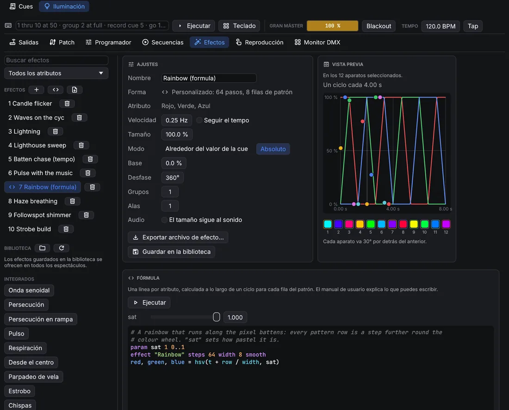
Lanza un efecto desde el programador (los efectos o effect 2) y grábalo en una cue. Sigue funcionando en las
cues siguientes hasta que una cue lo pare.
Los efectos se comparten como archivos .oqfx: Exportar archivo de efecto… escribe uno y el botón
de la lista de efectos los importa. Guardar en la biblioteca pone
un efecto en tu biblioteca de efectos, que todos los espectáculos ofrecen en Biblioteca.
Efectos de fórmula
Para dibujos que las formas de onda no pueden hacer, escribe una fórmula. Pulsa (Nuevo efecto con fórmula) en la lista de efectos, edita la fórmula en la tarjeta Fórmula y pulsa Ejecutar (o Ctrl+Intro). OpenQ convierte la fórmula en una tabla: para cada fila del patrón y cada paso de un ciclo, fija los atributos que nombras. El primer aparato reproduce la fila 0, el siguiente la fila 1 y así sucesivamente, volviendo a empezar tras la última fila. La velocidad, el tamaño, el desfase y los demás ajustes se siguen aplicando encima. Una fórmula es solo aritmética: no puede abrir archivos ni repetir bucles, y nunca se ejecuta durante la función; solo se reproduce la tabla que creó.
# Un arcoíris que recorre ocho aparatos, con un deslizador para la saturación.
param sat 1 0..1
effect "Rainbow run" steps 64 width 8 smooth
red, green, blue = hsv(t + row / width, sat)Una instrucción por línea; # empieza un comentario y las mayúsculas dan igual. Las palabras de la fórmula
están en inglés.
| Línea | Qué hace |
|---|---|
param sat 1 0..1 | Un deslizador en la tarjeta Fórmula: nombre, valor inicial y rango (0 a 1
si no se indica). Añade int para números enteros. Los deslizadores van antes del primer efecto; al moverlos
la fórmula se calcula de nuevo. |
effect "Nombre" steps 64 width 8 smooth | Empieza un efecto: muestras por ciclo (1 a 4096),
filas del patrón (1 a 512) y smooth para fundir entre muestras (quítalo para persecuciones que saltan). Una
fórmula puede crear varios efectos: el primero es el que editas, los demás se añaden a la lista. |
let k = sine(t) | Guarda un valor para las líneas de debajo. |
red, green, blue = … | Fija atributos, cada uno una vez por efecto: dimmer,
red, pan, tilt, zoom, gobo_rotation, extra3…
Los niveles van de 0 a 1 (lo que se sale se recorta). |
Los valores son números: t va de 0 a 1 a lo largo del ciclo, step cuenta los pasos (desde 0),
row es la fila del patrón, steps y width son los tamaños del efecto, y además los
deslizadores y los nombres de let. Usa + - * / % ^, paréntesis, comparaciones
(< <= == != >= >, que dan 1 o 0) y and, or, not.
| Función | Resultado |
|---|---|
sine(x), triangle(x),saw(x), ramp_down(x) | Las formas
de onda, de 0 a 1 en un ciclo (x en ciclos, normalmente t). |
square(x, duty) | 1 durante la primera parte duty del ciclo (la mitad si no se
indica) y luego 0. |
wave(x) | Una onda senoidal de −1 a 1, x en ciclos; wave(x + 0.25) es
el coseno. |
hsv(tono, saturación, valor) | Rojo, verde y azul de un color (tono en vueltas de la rueda de
color). Da tres valores, así que llena tres atributos: red, green, blue = hsv(t). |
pick(i, a, b, c…) | El valor número i de la lista, desde 0 (vuelve a empezar al
final). |
if(condición, a, b) | a cuando la condición no es 0; si no, b. |
noise(n, seed) | Un número aleatorio fijo de 0 a 1 para el número entero n (y
seed): siempre el mismo. |
min(a, b…), max(a, b…) | El valor más pequeño o el más grande. |
clamp(x, bajo, alto) | x dentro de bajo y alto (0 y 1 si no se indican). |
lerp(a, b, k) | De a (k = 0) a b (k = 1). |
smoothstep(x) | De 0 a 1 con inicio y final suaves. |
abs, floor, round, frac | Sin signo, redondeado hacia abajo, redondeado, la parte decimal. |
# Aparatos alternos, que se intercambian en cada mitad del ciclo.
effect "Odd / even" steps 2 width 2
dimmer = if(step == row, 1, 0)
# Cabezas vecinas que se mueven en sentidos opuestos (Modo: Alrededor del valor de la cue).
effect "Scissors" steps 64 width 2 smooth
pan = 0.5 + pick(row, 0.5, -0.5) * wave(t)Un error aparece bajo el editor con su línea y columna, y el efecto conserva su última tabla. Los espectáculos de OpenQ 0.3 con efectos de script de Python los siguen reproduciendo; el script antiguo se muestra bajo la tarjeta Fórmula para reescribirlo como fórmula, o en Python como se explica abajo.
Efectos hechos en Python
Algunos dibujos necesitan un programa de verdad: un valor que depende del paso anterior (un paseo aleatorio, un dibujo que
crece), bucles o datos de otro sitio. Escríbelos en Python en tu ordenador y guárdalos como archivo de efecto. OpenQ lo importa
como cualquier otro archivo .oqfx, como datos: dentro de OpenQ no se ejecuta nada. Sirve cualquier Python 3, sin
módulos extra.
- Guarda esto como
wander.py. Hace que cuatro cabezas móviles deambulen al azar y vuelvan a donde empezaron:import json import random def save_effect(path, name, attributes, steps, width, level, smooth=True, **settings): """Write an OpenQ effect file (.oqfx). level(row, step) returns one level (0 to 1) per attribute. """ n = len(attributes) values = [0.0] * (n * steps * width) for row in range(width): for step in range(steps): for col, v in enumerate(level(row, step)): at = (row * n + col) * steps + step values[at] = min(1.0, max(0.0, float(v))) table = {"attributes": attributes, "steps": steps, "width": width, "smooth": smooth, "values": values} effect = {"name": name, "shape": "Custom", "attribute": attributes[0], "table": table} effect.update(settings) with open(path, "w", encoding="utf-8") as f: json.dump({"openq_effect": 1, "effect": effect}, f) def walk(steps, seed): """A random walk that ends where it started (no jump).""" rnd = random.Random(seed) x, points = 0.5, [] for _ in range(steps): x = min(1.0, max(0.0, x + rnd.uniform(-0.06, 0.06))) points.append(x) drift = points[-1] - points[0] return [p - drift * k / steps for k, p in enumerate(points)] STEPS, HEADS = 128, 4 pan = [walk(STEPS, seed=row) for row in range(HEADS)] tilt = [walk(STEPS, seed=100 + row) for row in range(HEADS)] save_effect("wander.oqfx", "Wander", ["Pan", "Tilt"], STEPS, HEADS, lambda row, step: (pan[row][step], tilt[row][step]), speed=0.05, relative=True, size=0.5, spread=0) - Ejecútalo:
python3 wander.py(py wander.pyen Windows). Escribewander.oqfxen la misma carpeta. - En OpenQ, ve a , pulsa (Importar archivos de efecto) y elige el archivo. El efecto se añade a la lista; lánzalo en cuatro cabezas.
save_effect es la parte que hay que conservar para tus propios efectos:
- attributes: los nombres que guarda OpenQ, en inglés y con mayúsculas:
Dimmer,Red,Green,Blue,White,Pan,Tilt,Zoom,Iris,GoboRotation,Extra3… - steps: muestras por ciclo (1 a 4096); width: filas del patrón (1 a 512). Como mucho 16 atributos y un millón de valores.
- level(row, step): devuelve un nivel de 0 a 1 por atributo, en el mismo orden.
- smooth: fundir entre muestras (
Falsemantiene cada una, para persecuciones). - El resto son los ajustes del efecto, todos opcionales:
speed(Hz),sync(seguir el tempo),sizeybase(0 a 1),relative(True= alrededor del valor de la cue),spread(grados),groups,wings. Todos se pueden cambiar después en OpenQ.
El último paso de un ciclo enlaza directamente con el primero.
Haz que coincidan, como hace walk, o el efecto dará un salto en cada ciclo. OpenQ comprueba cada archivo que
importa y rechaza los que tienen tamaños o valores incorrectos.
5.3Reproducción y salidas
Secuencias
Una secuencia es una pila de cues. Las cues de iluminación son de seguimiento (tracking): una cue solo guarda lo que cambia, y lo demás sigue como lo dejaron las cues anteriores. Cada cue tiene un fade, un fade de bajada aparte para la intensidad que baja, y un delay.
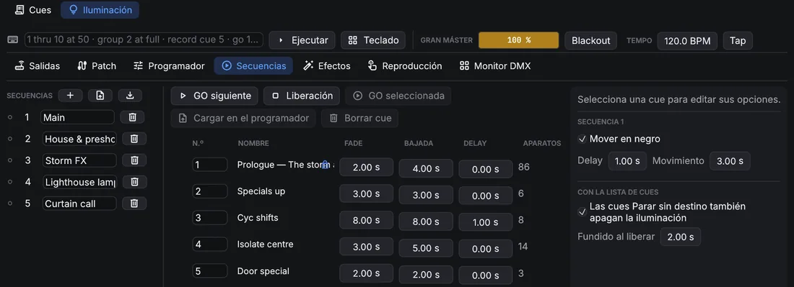
- Tiempos por familia da al color, la posición o el haz su propio fade y delay.
- Solo esta cue: sus cambios no se arrastran; la cue siguiente vuelve a lo que había antes.
- Bloquear guarda en la cue todos los valores que arrastra, así que editar cues anteriores ya no la cambia. Una cue bloqueada muestra un candado en la lista y el botón dice Bloqueado; púlsalo otra vez para que esos valores vuelvan a arrastrarse.
- Mover en negro (por secuencia): los aparatos apagados toman la posición, el color y el haz de su siguiente cue antes de encenderse, tras el delay indicado.
- Cargar en el programador recupera una cue para editarla; Actualizar cue, en la página Programador, guarda los cambios.
Los archivos USITT ASCII (.asc) traen cues de otra mesa: el botón
junto a Secuencias lee el patch, las cues, los grupos y los submásteres de un
archivo, y guarda el diseño como uno. El formato solo lleva intensidades: el color, la
posición y los efectos se quedan fuera, y los tiempos de follow y link se pierden.
Reproducción
La página Reproducción es desde donde se lleva la iluminación, en los dos modos, con tarjetas grandes para una pantalla táctil:
- Másteres: el gran máster, el blackout y el tempo de los efectos (se escribe o se marca con Tap).
- Secuencias: una tarjeta por secuencia, con su cue actual y la siguiente, un fader de nivel, GO y Liberación.
- Ejecutores: botones que ponen un estado encima de las secuencias, como la máquina de humo al 80 %, un estrobo o un especial. En modo edición, Añadir ejecutor crea uno y el lápiz lo edita: su nombre y color, un preajuste sobre unos aparatos (Usar seleccionados toma la selección del programador, o elige un grupo), y/o Guardar el programador para los valores y efectos del programador. Entra y sale en su Fade; Conmutar lo enciende y apaga con cada pulsación, Flash lo mantiene encendido solo mientras se pulsa.
Los ejecutores están en páginas: las pestañas de encima, con para una página nueva; un clic derecho en una pestaña la renombra o la elimina. Los ejecutores de una página que no se ve siguen activos. En modo edición, arrastra un ejecutor por su asa sobre otro para reordenarlos, o sobre una pestaña para llevarlo a esa página. Tamaño de los ejecutores agranda o achica las tarjetas.
Abrir en una ventana pone la página Reproducción en una ventana propia; elige una Pantalla para que ocupe una pantalla táctil. Cada ordenador recuerda si su ventana está abierta y dónde, así que vuelve tras reiniciar.
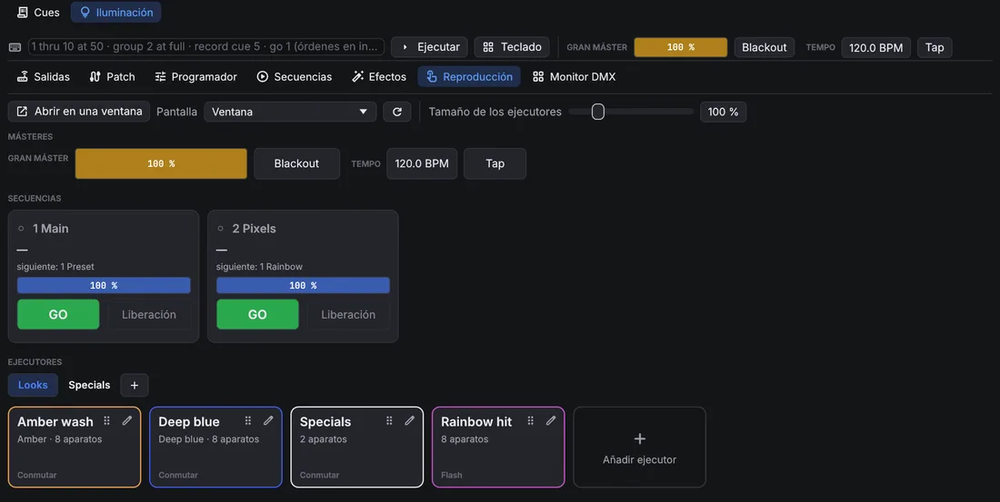
Superficies de control
Un controlador MIDI o una aplicación OSC (TouchOSC, por ejemplo) pueden manejar los ejecutores. En elige la entrada MIDI de este ordenador y añade asignaciones: pulsa Aprender nuevo (o el control de una asignación), mueve un fader o pulsa un botón y elige qué hace. Banco de ejecutores añade de una vez faders en CC 1–8 y botones en las notas 36–43. Los ejecutores se numeran por su lugar en la lista de secuencias.
- Faders: nivel de ejecutor, gran máster.
- Botones: GO, liberar y flash de ejecutor (a tope mientras se mantiene), ejecutores de reproducción (los botones de la página Reproducción), página siguiente y anterior, blackout, liberar todo, tap tempo, y el GO y Parar todo de la lista de cues. Un botón actúa una vez por pulsación, mande notas, CC 127/0 u OSC 1/0.
- Páginas: con un tamaño de página de, por ejemplo, 8, los ocho faders del controlador llevan las secuencias 1–8 en la primera página y las 9–16 en la siguiente; los botones de página pasan de una a otra, y la página Reproducción muestra la misma página de ejecutores.
- Recogida suave: un fader que no coincide con su nivel (se movió en pantalla, o cambió la página) no hace nada hasta alcanzarlo, así que nada salta.
- Retorno: elige una salida en Retorno MIDI y las luces de los botones y los faders motorizados siguen el espectáculo. Para una app OSC, pon en Retorno OSC el puerto UDP en el que escucha: los niveles y las luces se envían a la app que mandó el último control.
- MIDI clock: con Los efectos siguen su tempo, el tempo de los efectos sigue el reloj de la entrada MIDI (de un programa de DJ o una caja de ritmos); al lado se ven los BPM que lee.
Las asignaciones se guardan con el espectáculo; la entrada MIDI es del ordenador, así que un dispositivo remoto puede usar su
propio controlador (sus movimientos van al dispositivo principal). Las asignaciones OSC llegan por el
receptor OSC, que además entiende las direcciones /light/… sin asignación.
Salidas y entradas
En la página Salidas añade adónde va el DMX: Art-Net (la dirección de un nodo, o difusión; Buscar dispositivos lista los nodos de la red), sACN (multicast o una dirección unicast, con prioridad) o una interfaz Enttec DMX USB Pro (o compatible). Cada salida envía una lista de universos: el universo del patch a la izquierda y el número en el cable a la derecha (Art-Net cuenta desde 0). Cada salida funciona por su cuenta, así que un dispositivo lento o desconectado no frena a los demás, y uno perdido se vuelve a abrir solo.
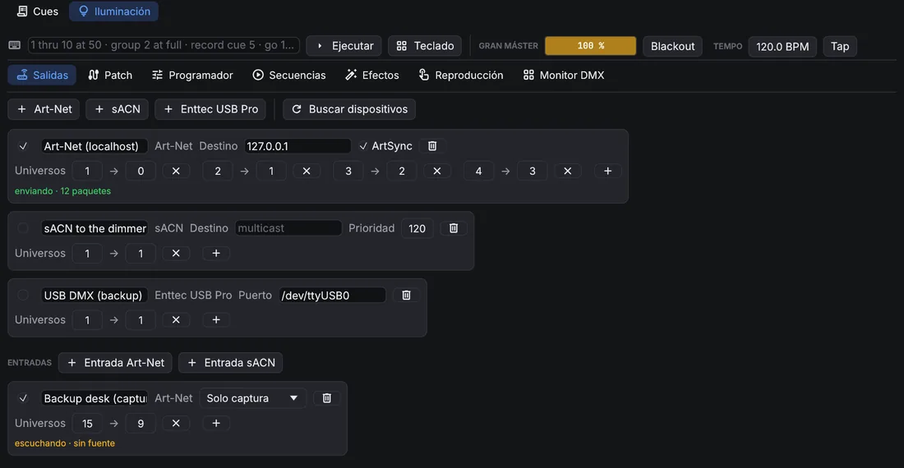
Las entradas reciben Art-Net o sACN de otra mesa. Cada una mezcla con la salida de OpenQ (gana el valor más alto), la sustituye en los universos que recibe, o queda solo para capturar. Si varias mesas envían el mismo universo sACN, gana la de más prioridad. OpenQ ignora sus propios paquetes, así que una salida en difusión no vuelve a entrar por una entrada.
Una salida Art-Net puede mandar ArtSync tras cada fotograma, para que los nodos que lo admiten cambien todos sus universos a la vez. Mayús+clic en un nodo de la lista Nodos le envía los universos que emite; un aviso indica cuándo la salida manda un universo que el nodo elegido no tiene. Una entrada Art-Net responde a las mesas que buscan nodos (ArtPoll), así que las mesas que solo envían a los nodos que encuentran también envían a OpenQ.
Monitor DMX
El monitor DMX muestra cada canal de un universo tal como sale, entradas incluidas. Una línea amarilla marca dónde empieza cada aparato.
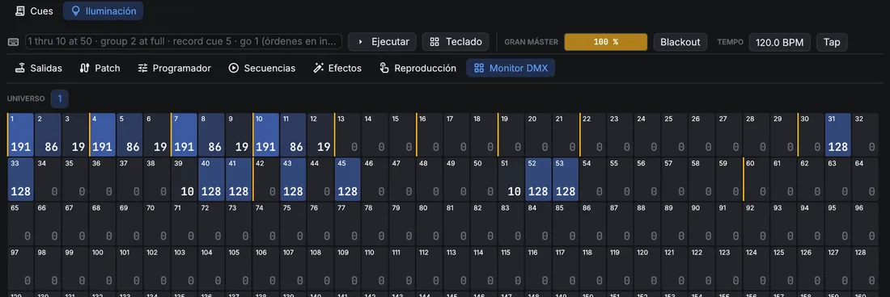
Dispositivos remotos y visualizadores
Un dispositivo remoto recibe el diseño de iluminación y sus cambios, y muestra los ejecutores y la salida DMX del dispositivo principal; su GO y sus faders actúan en el dispositivo principal. Un dispositivo con el rol de edición también puede cambiar el diseño. Un visualizador puede seguir a OpenQ del mismo modo, o leer el DMX por Art-Net o sACN y el montaje de un MVR exportado.
(también en Patch → Planta) muestra el montaje en OQVis, el visualizador 3D que se instala con OpenQ: OpenQ guarda el patch como archivo MVR y abre OQVis con él. Si lo eliges otra vez mientras OQVis está abierto, solo se reescribe el archivo y OQVis lo vuelve a cargar. OQVis recibe el DMX por Art-Net, sACN o su propio enlace con OpenQ. Si OpenQ no encuentra OQVis, pregunta dónde está el programa y lo recuerda.